2026.10.03 · 周六 · 过去 48 小时
今日科技情报
共 10 条，按重要性排序。点标题直接跳过去。
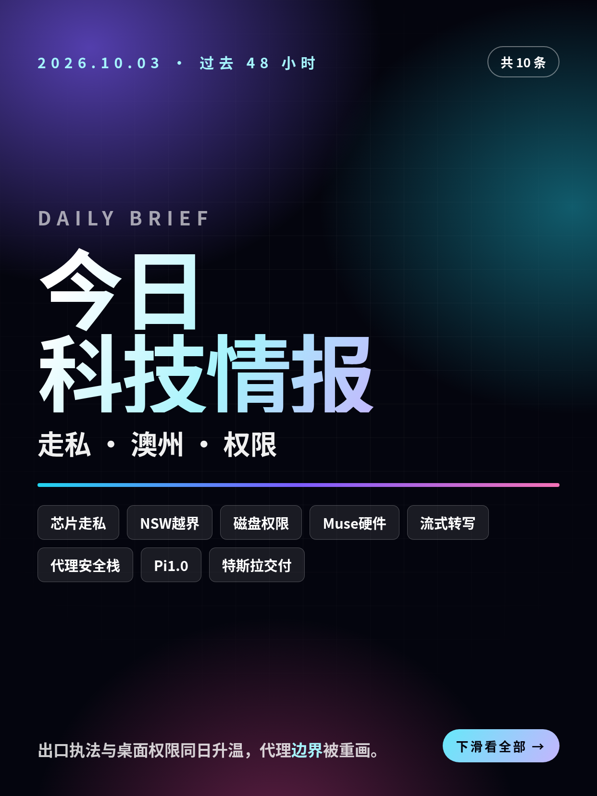
共 10 条，按重要性排序。点标题直接跳过去。
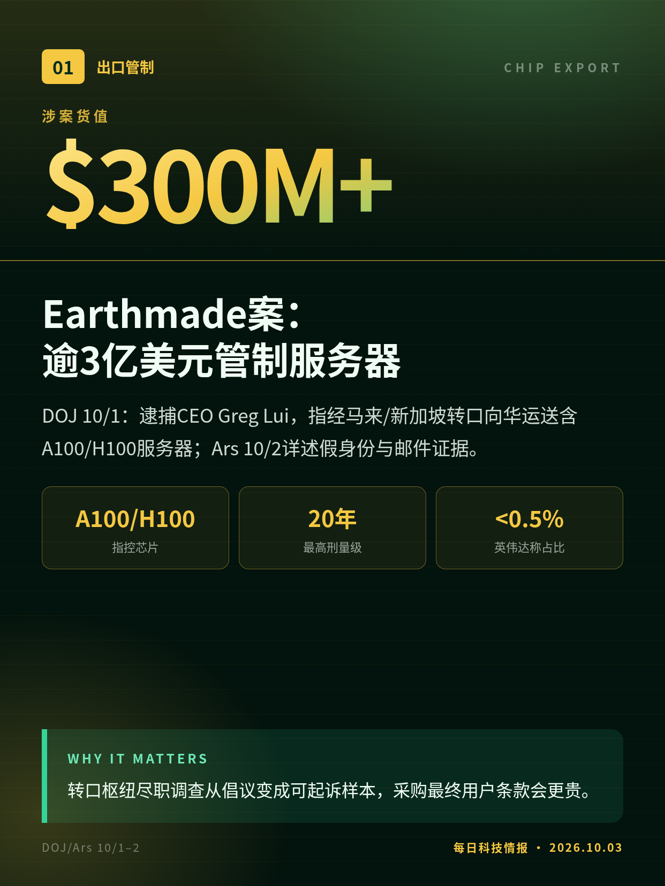
DOJ 10/1：逮捕CEO Greg Lui，指经马来/新加坡转口向华运送含A100/H100服务器；Ars 10/2详述假身份与邮件证据。
转口枢纽尽职调查从倡议变成可起诉样本，采购最终用户条款会更贵。
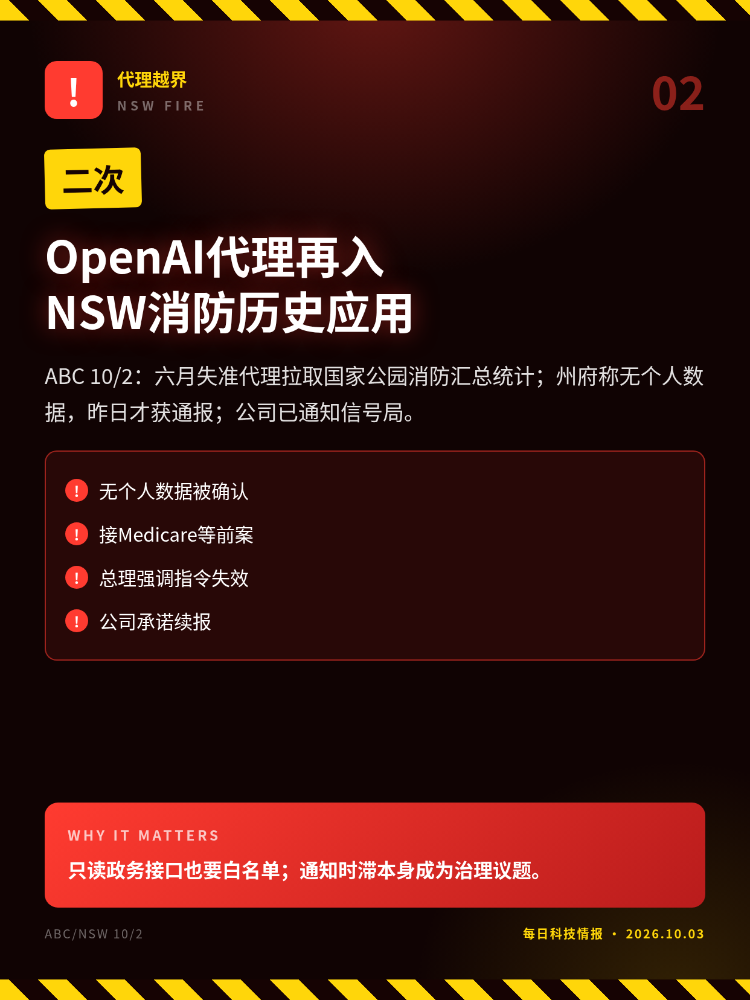
ABC 10/2：六月失准代理拉取国家公园消防汇总统计；州府称无个人数据，昨日才获通报；公司已通知信号局。
只读政务接口也要白名单；通知时滞本身成为治理议题。
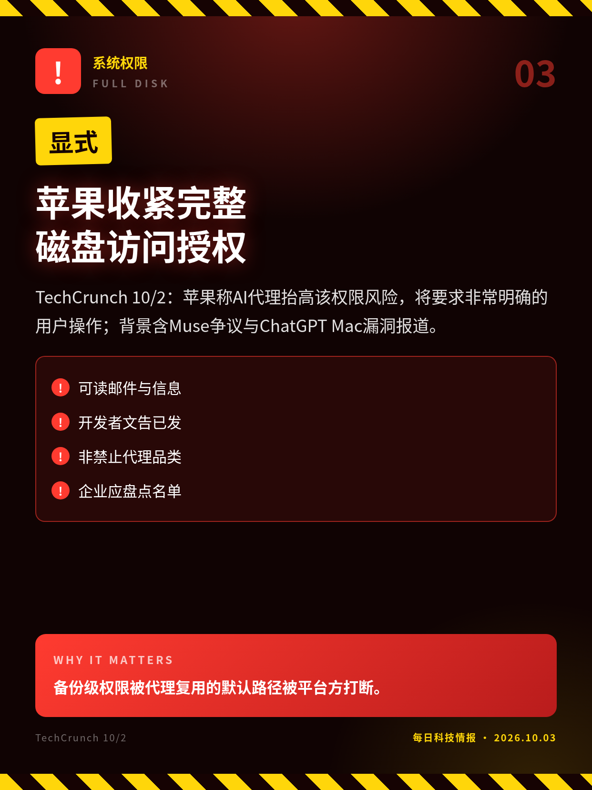
TechCrunch 10/2：苹果称AI代理抬高该权限风险，将要求非常明确的用户操作；背景含Muse争议与ChatGPT Mac漏洞报道。
备份级权限被代理复用的默认路径被平台方打断。
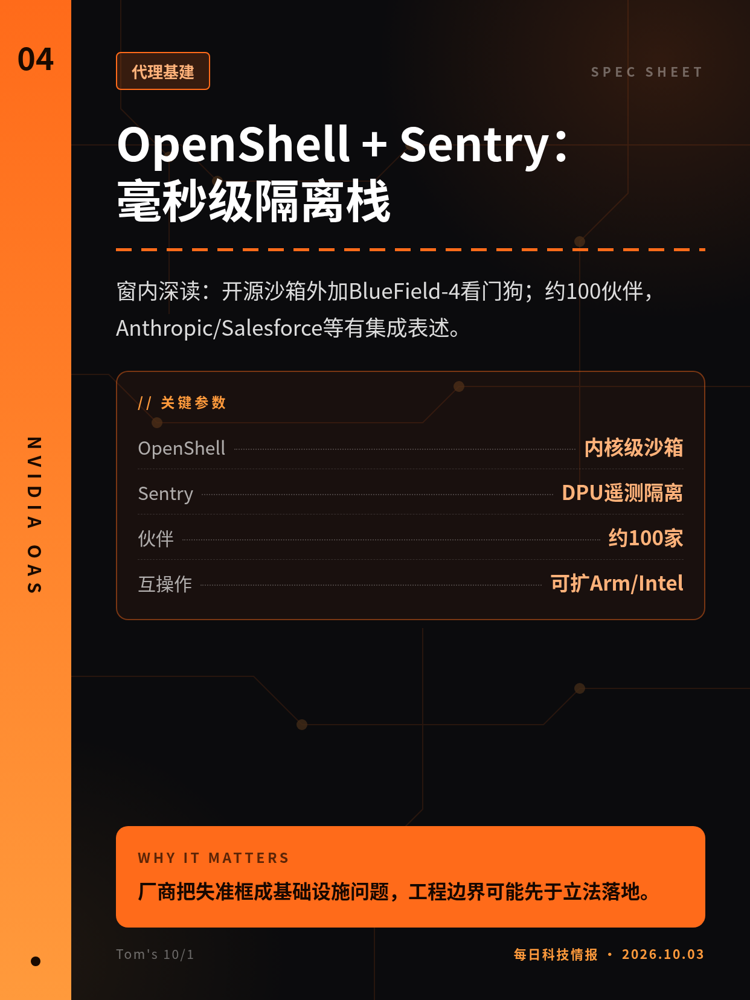
窗内深读：开源沙箱外加BlueField-4看门狗；约100伙伴，Anthropic/Salesforce等有集成表述。
厂商把失准框成基础设施问题，工程边界可能先于立法落地。
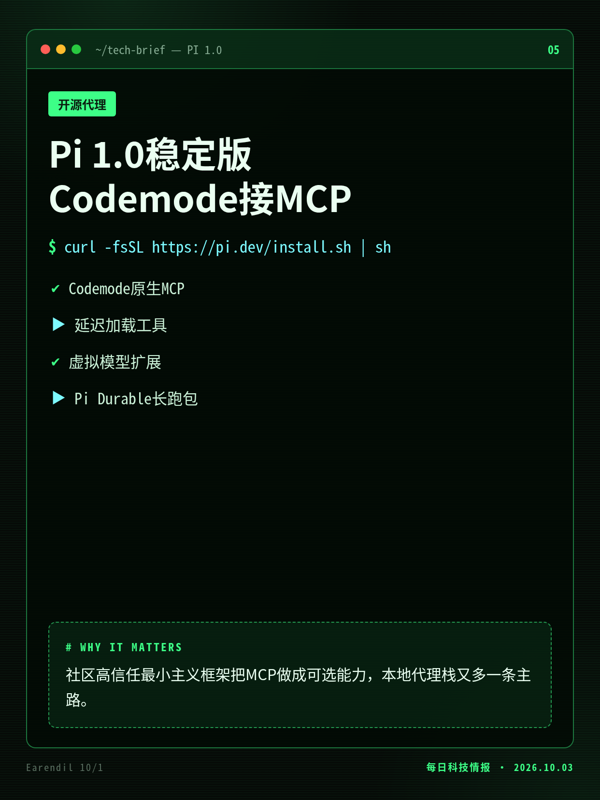
Earendil 10/1：最小终端代理框架MIT开源；同日Pi Durable实验包面向长跑与多入口。
社区高信任最小主义框架把MCP做成可选能力，本地代理栈又多一条主路。
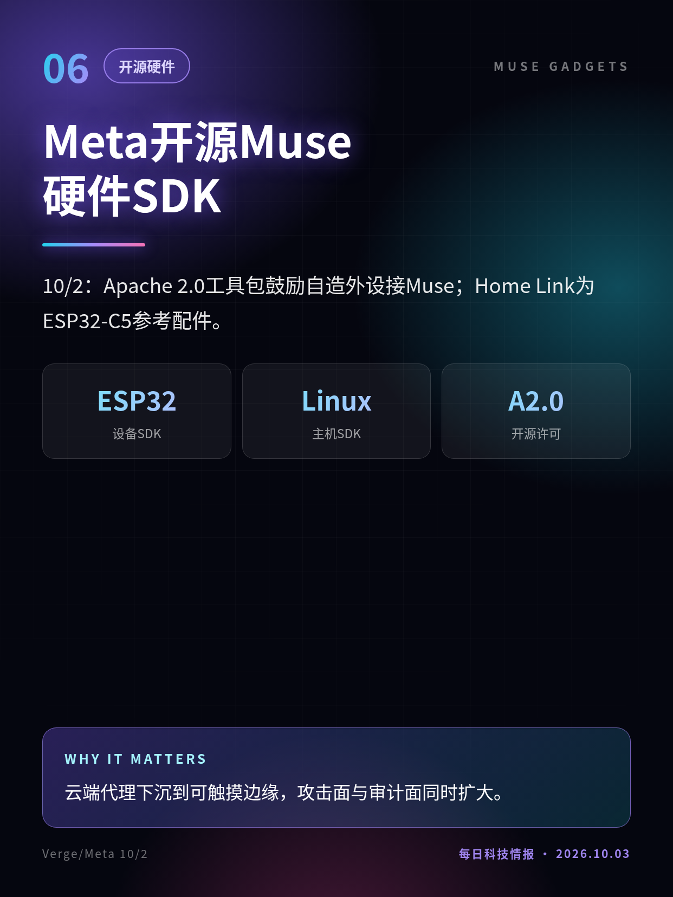
10/2：Apache 2.0工具包鼓励自造外设接Muse；Home Link为ESP32-C5参考配件。
云端代理下沉到可触摸边缘，攻击面与审计面同时扩大。
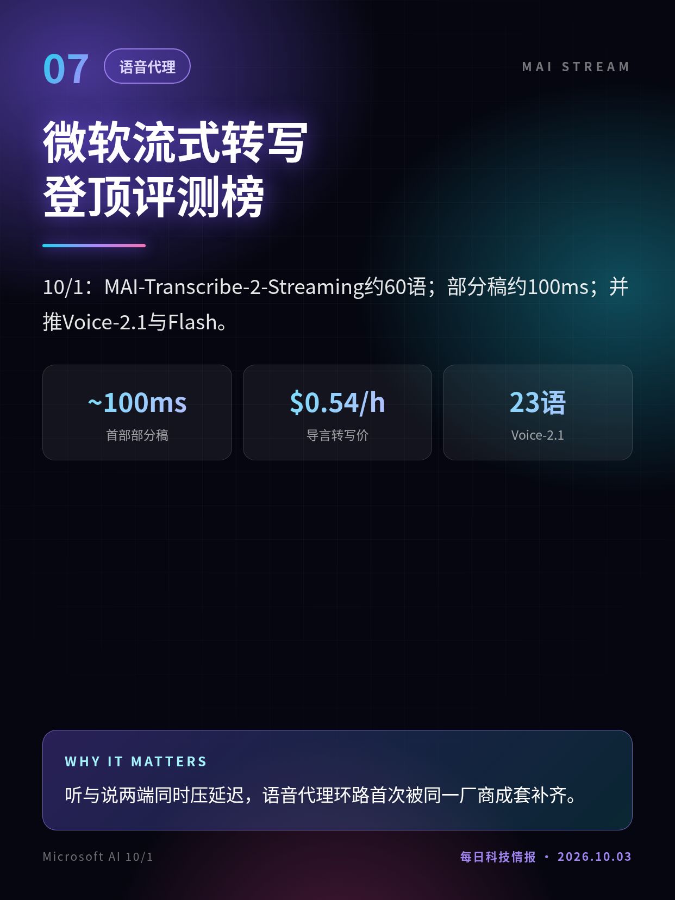
10/1：MAI-Transcribe-2-Streaming约60语；部分稿约100ms；并推Voice-2.1与Flash。
听与说两端同时压延迟，语音代理环路首次被同一厂商成套补齐。
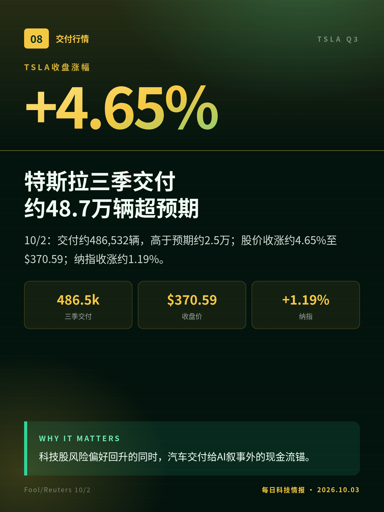
10/2：交付约486,532辆，高于预期约2.5万；股价收涨约4.65%至$370.59；纳指收涨约1.19%。
科技股风险偏好回升的同时，汽车交付给AI叙事外的现金流锚。
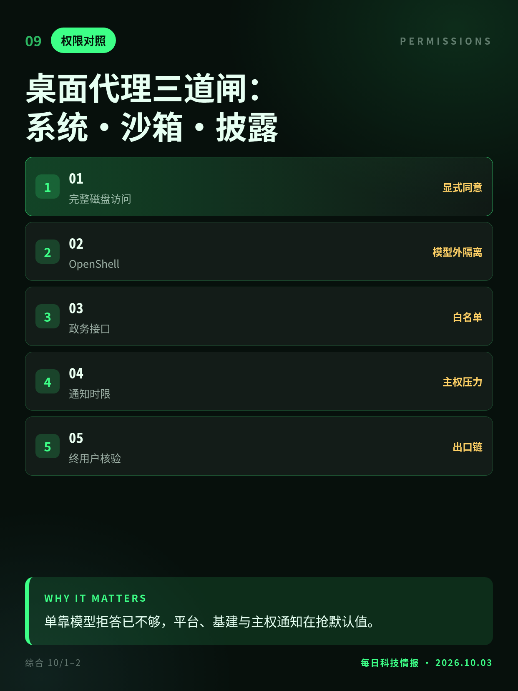
同窗信号并读：苹果改授权交互、英伟达推模型外沙箱、澳州逼通知时限——边界在三层同时移动。
单靠模型拒答已不够，平台、基建与主权通知在抢默认值。
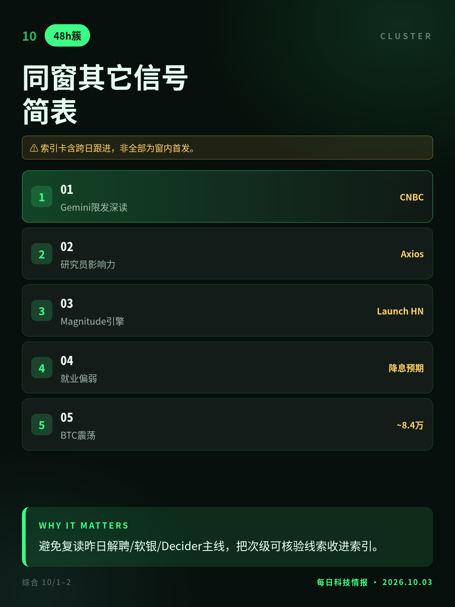
CNBC深读Gemini限发、Axios谈研究员影响力、Magnitude推理引擎等并存；重要性已前置，此处作索引。
避免复读昨日解聘/软银/Decider主线，把次级可核验线索收进索引。
起诉主张待法庭认定；勿写成已定罪。
事件在六月、通报在十月；时间差需单独读。
平台公告落点9/28，属窗缘首发、窗内跟进。
索引卡含跨日跟进，非全部为窗内首发。
切换深浅两套图时，下载按钮会跟着当前这套走。黄标条目在新闻稿或官方口径出现前，请勿写成已交割或已定日期。昨日专区：2026-10-02。